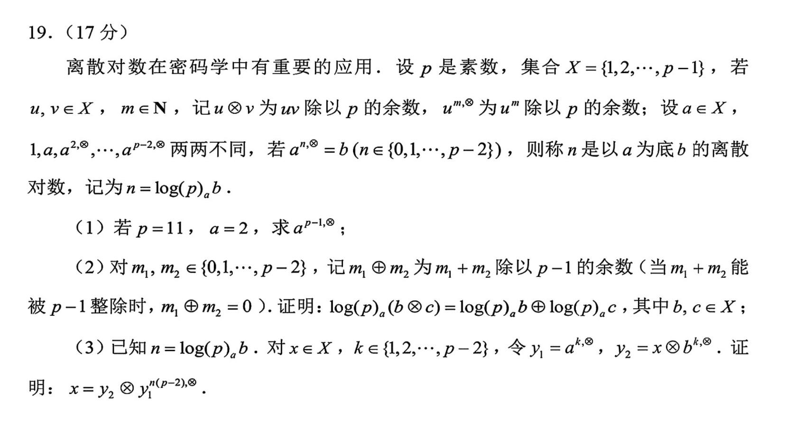
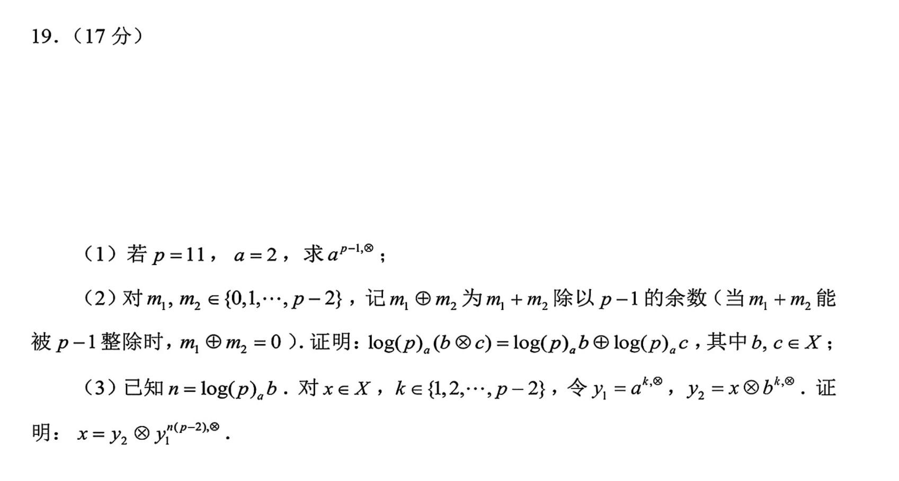
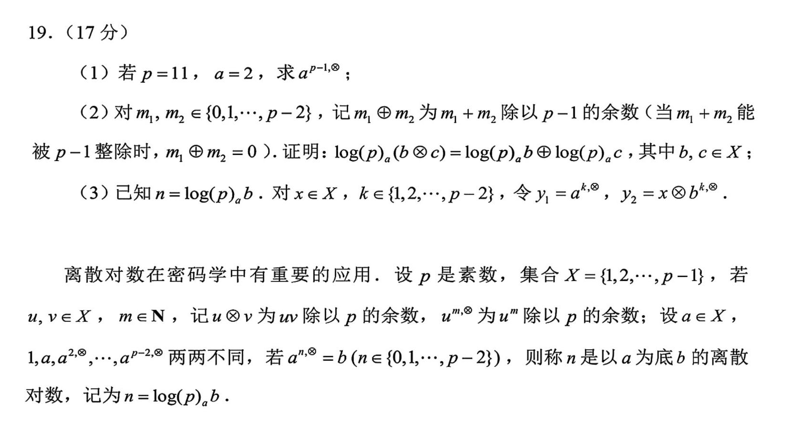

与 AI 交互
摘要
本篇主要讲解 AI 的简易使用技巧，与实验文档中的“ Getting Source Code for PAs ”有部分对照，但无直接绑定关系。
时代
在 AI 时代，知识是最不值钱的东西。
在编写宗旨中我们提到过， PA 是在 2014 年开发完成的，而在现在的 202x 年代，我们获得了一个强劲的 AI 助手，它可以帮助我们摆脱过去必须读大量手册、搜索社区才能解决一点点小需求的问题。
我们在这篇文档中可以轻松一下，来聊聊如何使用 AI 工具来辅助我们的实验和拓展学习。
初级技巧：报错信息解决
想必这个不用教大家都会，我们前面介绍了很多的 Linux 工具，当你的本地机中没有安装这个工具时，终端就会报错：
即使你看不懂他在讲什么，你也知道， AI 大概率是看得懂的，你把这段信息复制给它，它就会教你怎么解决这个问题。
这个技巧也可以推广，比如，当你在配置 CMake 时，你偶尔可能遇到这样的报错：
一大堆的报错信息你肯定懒得看，你如果不知道它的机制，即使看懂了你也不会改，这种时候不如直接问 AI ：
然后你要做的就是复制粘贴了。
继续推广这个技巧，当我们在自己写程序时，也可以借鉴这种思路，在程序中输出足够多的 log 信息，这样 AI 就可以帮我们分析错误原因。比如
int num = 0;
for (int i = 0; i < 10; i++){
printf("i = %d\n", i);
for (int j = 0; j < 10; j++){
printf("j = %d\n", j);
printf("Before: num = %d\n", num);
num += i * j;
printf("After: num = %d\n", num);
}
}
这样的话，如果程序出现了 bug ，就可以把 log 信息复制给 AI ，它就可以知道程序的执行流中各个变量的状态。否则， AI 就只能单纯地靠猜测来检查你的代码哪里有问题了，众所周知， AI 就像在做数学证明题的同学们一样，即使知道自己证的大概率是错的，也会往上面硬写，期盼能蒙对几分。
拾遗
在介绍后面更好用的技巧前，我们先给大家铺垫一些预备知识。
下面是一个大家都见过的例子：
 （各位现在有在做密码学的同学吗？知道离散对数是什么了吗？）
其实 AI 就是一位答题者，各位现在就是一位出题者。回想一下当年，你们在考试时是根据什么答题的？现在你们来做出题者，就需要相对应做些什么事。
板板正正的卷子和题目大家见得多了，我们玩个小游戏，如果我们把这道题目变成下面的样子放在考场上，你觉得多少高中生能答对？

答案显然，作对的人数无限逼近于 0% 。注意，这道题的题干并没有给出任何的条件，也就是说去掉题干不影响题目的正确性，所以我们只是去掉了一些与题目并非强相关的知识内容，如果是一个做密码学的同学来做这道题，那他自然不会感到太大的障碍，因为他在知识层面有这些背景内容的记忆。但是，问题在于，这道题目面对的人是高中生而不是密码学研究者，对一个高中生的要求里并不包括拥有密码学背景知识，所以题干必须给出这道题中不在高中范围内的密码学知识，不然这道题目就不能达成考察和区分的目的。
当我们要给一名高中生出题时，需要在高中知识范围内出题，如果题目涉及到非高中知识，则需要在题目中加入其知识背景，确保考生在我们期望的思维能力下能够做出题目。当我们想要降低题目难度时，可以提供更多的条件、知识或思路提醒。
所以同理，我们想给 AI 出题，就要在知识库范围内出题，如果题目涉及到非知识库知识（如当前项目目标、代码结构、代码内容等），则需要在题目中加入其知识背景，确保 AI 在其推理能力下能够做出题目。如果 AI 的回答不能让我们满意，我们就需要降低题目难度，提供更多的条件、知识或思路提醒。
还有一些小彩蛋，想象一个情境，我们在日常中拿到了这样的一道题：
于是我们询问 AI ：
AI 会怎么回答？你觉得呢？
所以，或许这道题实际是出成这样的：

上面是原题干，下面是出题老师所补充的，让高中生能够做出题目而准备的信息，他们是有这样的前后关系的，而如果我们只会做题，那永远只能把题目做反了。
我现在知道了需要提供哪些信息了，那具体我该如何提问？
怎么问怎么答，问几点答几点，这是大家做那么久语文题一直接触的准则。题目让分析修辞就说用了什么修辞，让结合原文就引用原文某某片段，要结合生活实际就说自己遇到过什么什么事。
限于篇幅，就不详细解释了，不过对身经百战的你来说应该也不难。其实也就只是反过来，从答题者变成出题者而已。
总而言之，如何使用 AI ，或许早在高中时期就是一个伏笔，现在是检验大家学习成效的时候了。
旅行伙伴加入！
说了这么多，最关键的问题其实就是，对于 AI 来说，对于我们问的每一个具体问题，它的非知识库知识是什么，这些就是我们需要补充的内容。
结合前面的初识 Linux 部分的内容，我们需要认识更多的新伙伴，他们会在未来的 PA 中大幅助力我们前进。
显然注意到，在完成 PA 的过程中， AI 所不知道的就是：实验要求和项目本身这两样内容（因为你能够上手做 PA ，就是根据这些东西）。所以我们需要给 AI 提供这些内容。
回想你在做语文阅读题时，一篇阅读加上题目长则两三千字，可能还要分析各种图表，如果你给到 AI 的信息只有抠门的二三十个字，基本也可以不用指望它能给出满意的回答了。
如何提供实验要求？这很简单，把实验文档复制进去就行了。
如何提供项目呢？复制粘贴每一个文件就行了。
Warning
等等，你说什么？你想复制粘贴十几个 .c .h 文件，这也太麻烦了吧！先不说会不会有重漏，万一你哪里做了一点点修改，你又要重新再复制一遍吗？
所以，这个时候就要用到命令行工具了：
但万一文件太多，还要手动复制全部输出吗？还是太麻烦了。这种时候我们就可以用我们之前学习的管道和重定向。
你可以这样：
把所有的文件内容存储在一个文件中，这样 AI 就可以直接读取这个文件了。
当然，偶尔我们不想多管理一个文件，只是想把一个程序的输出复制到剪贴板里去，但直接输出到终端复制粘贴又太麻烦，那该怎么办呢？
Linux 理念
当你有某种需求时，大概率就有一个工具可以解决它。
所以现在就是你询问 AI 的时候了。
一个参考答案
利用管道机制，把所有.c 和.h 文件的内容合并到一个文件中，并将其输出到剪贴板：
执行完之后，你就会发现可以直接粘贴所有文件的内容了。
现在我们还面临一个问题， AI 可能并不知道我们这些文件是怎么组织的，分成哪些模块，它可能在风马牛不相干的模块中修改了一点代码，导致程序不能正常运行。
所以，我们还需要提供给 AI 我们的项目架构。这又该怎么办呢？（这难道还用我说嘛）
把文件架构的内容也复制给 AI ，想必就能得到更好的答案了。
但是，虽然我们有了项目架构，文件内容和提供的文件架构之间对应不上，也就是说 AI 并不知道你的项目下的每一个文件对应什么内容，这又该怎么办？
所以，你知道自己应该养成这样一个习惯，在每个代码文件的开头用注释写上这个文件的路径和名称，这样就能够建立起架构到内容的对应关系了。
思路总结
我们先分析了 AI 需要哪些补充信息，然后得知了需要实验文档，再通过命令行工具快速整合了项目代码。再经分析发现还需要项目结构，于是我们询问 AI ，得知了可以通过新的命令行工具来获取项目结构。我们获得了新的命令行伙伴。
然后，为了建立文件到代码的一一对应关系，我们得出了“应当养成在代码文件头部写出当前代码所属的文件名的习惯”的结论。
通过不断分析，不断研究，我们逐渐形成了自己的解决问题的思路，并最终得出了自己的解决方案。
综上，我们应该建立起这样的理念，就是每当自己有一个需求，就需要根据需求来分析解决方法，由此得到自己应当做什么来解决这个需求，相信这个理念会在未来的道路上一直帮助到大家。
以下是一些思考题。
STFW RTFM RTFSC ？
使用了一段时间 AI 后，大家认为上面这三个词还有必要存在吗？还是说其依然有存在的价值？这个问题很适合大家在做 PA 的过程中不断思考，感受时代变化带来的，学习模式的变化。
信息
我们与 AI 交互的媒介是文字，但我们脑内的思想本身不是寥寥几个文字能准确表达的，从思想到文字，再从文字到 AI 的接收，其中损失了不少的信息。
AI 也不知道我们掌握每个知识的程度，不知道我们的身份是什么，过去是怎么样的学习模式，适合怎样的讲解方式。这些是我们自己心知肚明，而 AI 只能根据输入的那点信息来猜测的。
或许，未来我们可以通过更丰富的方式，如声音、视频甚至脑机接口来与 AI 交互，从而让 AI 更好地了解我们的想法，给出更令人满意的回答。
这也让我们反思，如何实现人与人之间更高效的沟通，避免信息损失导致的误解。
能够跟到这里，笔者也该跟你说一句辛苦了，我该感谢你对我撰写的文档质量的信任，虽然限于篇幅，不可能在使用 AI 的方法上面面俱到，如果你有更多使用 AI 的独门秘诀，也欢迎与我偷偷分享。(doge)
你已完成 PA 的所有准备工作
你已经学会了与 AI 交互的基础操作，相信在后续实验开始之后，你的 PA 之旅会更加一帆风顺。
遐想
十年前没有 AI ，没有往年代码的同学，是怎么完成 PA 的呢？